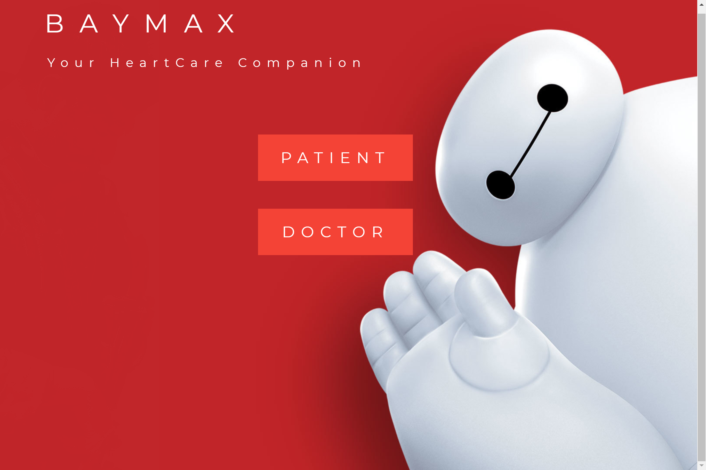
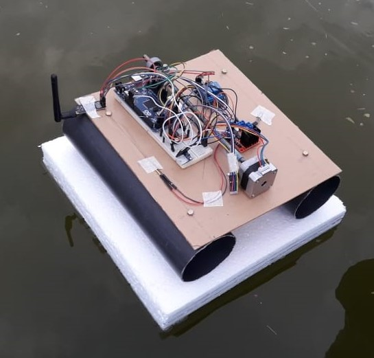
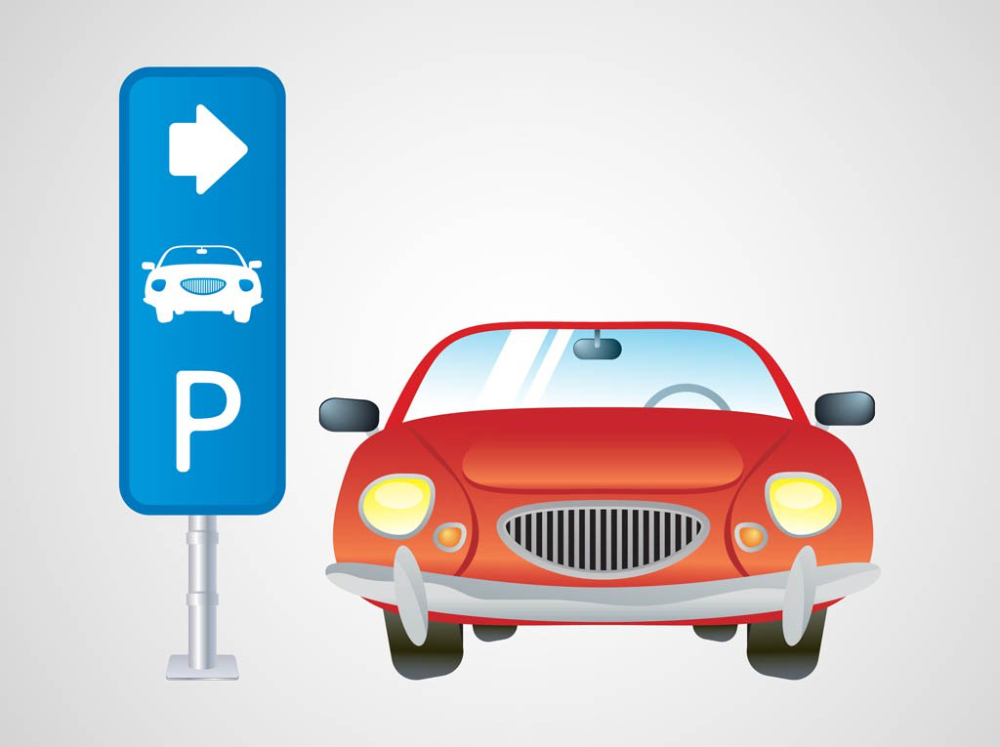

{kind=link}
Education
Dharmaraja College, Kandy, SriLanka (2004 - 2014).
University of Peradeniya, SriLanka (2015 - present).
Currently pursuing Bsc. Eng in Computer Engineering.
Current GPA - 3.65/4.
Hello! I am a undergraduate of unversity of peradeniya, currently pursuing Bsc. Eng in Computer Engineering. I am passionate about Machine Learning and Artificial Inteligence, Softwear and Web Development, Algorithmic programming.
Download CV
This was a group project and our goal was to build a system where users can check whether they have a heart disease by simply inserting some inputs which they can easily measure at home. We assumed that the users have the ability to take measurements like blood pressure, heart rate, height, weight, etc. at home because there are equipment that can be bought from the market that are cheap and easy to use.
Since doctors use lots of methods to identify diseases and we have only several user inputs, our goal was to find a pattern between that inputs and the diseases. Our approach was to use machine learning techniques to find a pattern. For that we needed data and to collect data easily, we inserted another part to our system which doctors can use it to store their patient’s data and keep track of them. In return, they have to provide us data (only the medical information without names and other personal data).
Since that takes some time(to collect data in that manner) and we wanted do tests to find a pattern we gathered some free data available in the internet and applied different machine learning techniques(Logistic regression , neural network, SVM) using Python and we could achieve an accuracy near 80% in logistic regression model.
That made us believe that there should be a pattern between that inputs and the diseases but the lack of data stood in our way. We believe that after launching the site (therefore, we can gather more data) we can find a more efficient and accurate model to predict diseases.

This was a group project and our concept was a small scale network of fishing bots which have a trap attached to each bots. A bot can randomly move in the water into some certain distance and detect whether if any fish is caught to the trap. Those fishing bots are connected to a relay node which can monitor the status of the bots. Also We designed a web application which can monitor the status of multiple relay nodes because one can own multiple relay nodes which can be placed in different places and he/she could be able to monitor the status of their nodes.
We made a prototype fishing bot , prototype relay node , and a web application. The technologies, platforms & languages that were used are Arduino IO, Raspberry Pi, MongoDB, NodeJS,
HTML/CSS, Python, C.

This was a group project and it won the third place in ACES Hackathon 2017 Hardware & Network category organized by university of Peradeniya. Our goal was to inform users about empty spaces in car parks in busy areas, cities, etc. to minimize the traffic conditions in those busy areas. Our approach was to build a mobile application which can be used by the users to check the empty spaces in car parks in the interested areas.
We built a model carpark (for demonstration purposes) and the mobile application.
Under Construction! More to come! :)